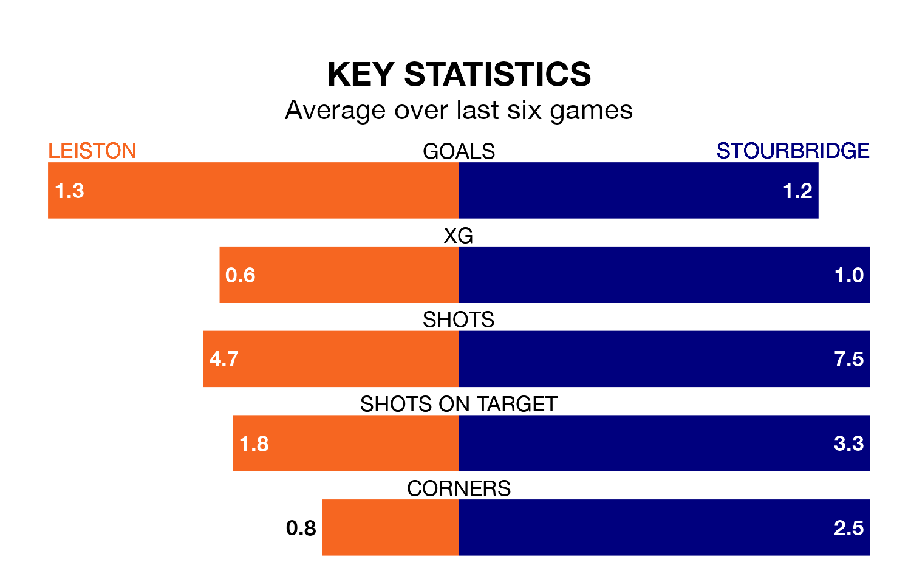

Stourbridge travel to Victory Road looking to secure a first win in six Southern League Premier – Central games against Leiston on Saturday.
Stourbridge have lost two and drawn three matches since they last earned three points – against Alvechurch on January 23.
They face a Leiston side who have won two and drawn one over that time.
In the last 10 years, Leiston and Stourbridge have played each other on nine occasions. Leiston won two of them, Stourbridge five, and they drew twice.
On average, Leiston scored 0.9 goals and Stourbridge 2.1 in those matches.
Their last meeting was on February 17, when Leiston won 3-1 away.
With 43 goals in 29 games so far this season, Stourbridge are scoring at the league's average rate with 1.5 goals per game. And they are conceding fewer than average, letting in 41 goals at a rate of 1.4 per game.
Leiston are also average scorers, with 1.5 goals per game. They have conceded 1.6 goals per game.
The visitors are 17th in the table after 29 games, of which they have won 10 and drawn six, earning 36 points.
The home side are nine places ahead of Stourbridge in eighth, with 13 wins and eight draws putting them on 47 points.
Leiston's last match was on February 27, a 3-0 loss against Mickleover Sports.
Stourbridge drew 1-1 with Needham Market last time out, on Tuesday.
Updated: 09:34 (UTC), 08/03/24